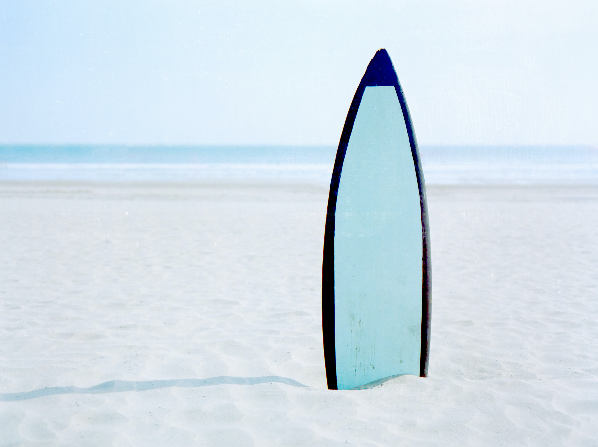

Located in the heart of San Luis Obispo, Tri Fin Surf is an iconic destination for central coast surfers. For decades we've helped surfers of all levels of experience get the gear that they're looking for to chase waves. Browse our products selection here online, or come visit our store!
